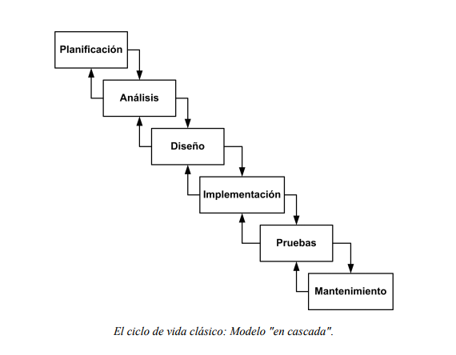
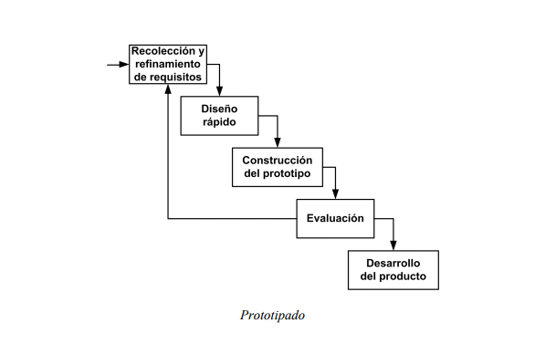
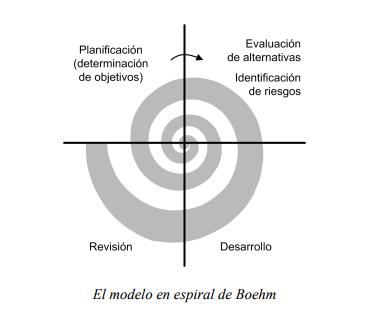

El ciclo de vida de un sistema de información cuenta con varios pasos, cada uno con subsecciones del mismo, existen varios modelos para representar este ciclo:
*Planificación
*Analisis
*Diseño
*Implementación
*Pruebas
*Despliegue
*Uso y mantenimiento
Modelos de ciclo de vida
Ciclo Clasico o de Cascada

En este modelo el ciclo de vida, el desearrollo es secuencial, esto quiere decir que solo se puede pasar al siguiente paso una vez terminado el paso anterior. En la realidad, casi ningun proyecto de software sigue este modelo.
Ciclo Prototipado.

Este modelo se enfonca en crear una serie de prototipos que se pueden ir revisando junto con el cliente. De esta manera, es mas sencillo generar un sistema eficiente y con el que el cliente quede satisfecho.
Modelo en espiral

En los modelos iterativos se repiten los mismos pasos una y otra vez, cada vez se va haciendo para una parte diferente del programa. Por ejemplo, en el modelo en espiral primero se planifica solo la primera parte del proyecto, se identifican los riesgos, se desarrolla y se revisa. Acabando esto, se vuelve a planificar para el segundo avance del proyecto y asi sucesivamente.